NMAP scanning exercises
| Linux |
Intro:
This project contains basic and intermediate nmap scanning exercises to practice using different options for IP scanning, port ranges, service detection, OS identification, and stealth techniques.
Exercise 1 – Simple IP Scan
Use nmap to scan your local router’s IP address. Identify open ports and display their status.

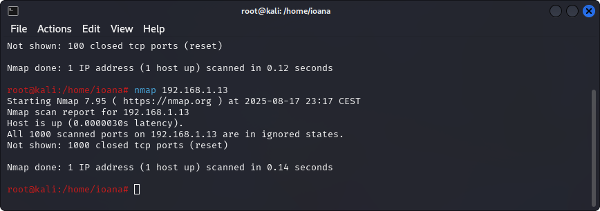
Exercise 2 – Single Port Scan
Scan a web server’s IP (e.g., 192.168.1.1) to check if port 80 is open. Use the -p option to specify the port.

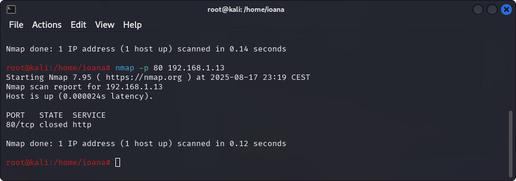
Exercise 3 – Port Range Scan
Use nmap to scan a DNS server (e.g., 8.8.8.8) for open ports within a specific range, such as 53–80.

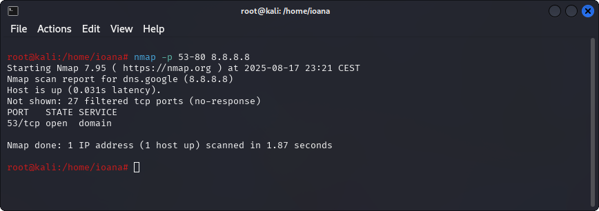
Exercise 4 – Subnet Scan
Scan a local subnet (e.g., 192.168.1.0/24) to identify all active devices. Use the -sn option for a no-port scan.

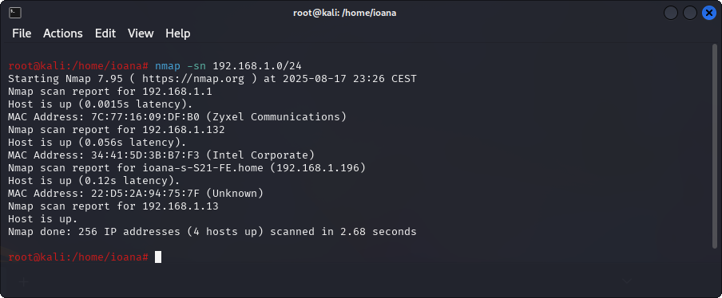
Exercise 5 – Save Scan Results
Scan an FTP server (e.g., 192.168.0.1) and save the results to a text file. Use the -oN option to set the output filename.

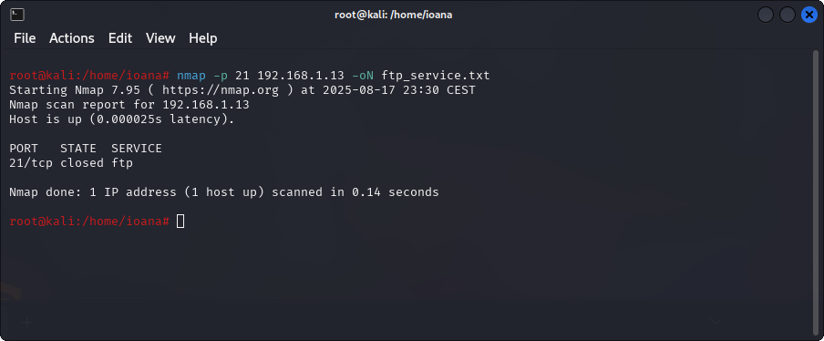
Exercise 6 – Advanced Port Scan
Scan a web server’s IP to identify open ports within a custom range, e.g., 1–1024.

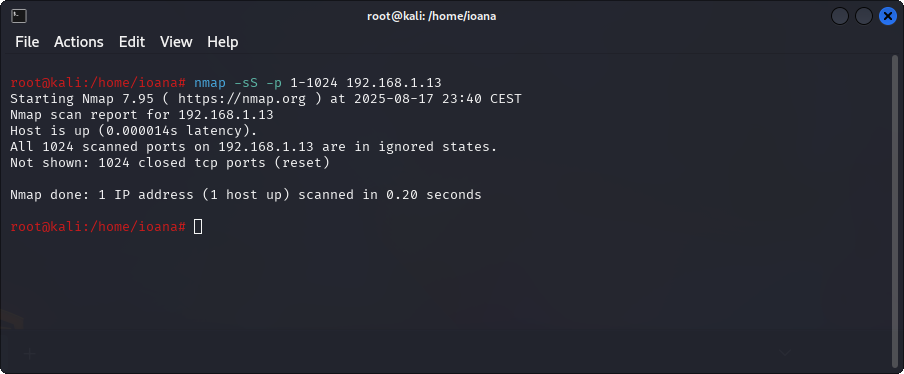
Exercise 7 – OS Detection
Use nmap to scan a server’s IP and detect its operating system. Use the -o option for OS detection.

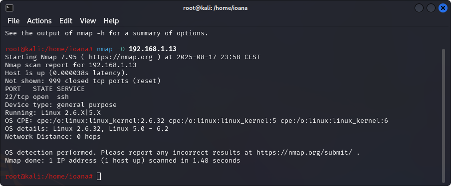
Exercise 8 – Service Detection
Scan a server’s IP to identify background services. Use the -sV option to enable service version detection.

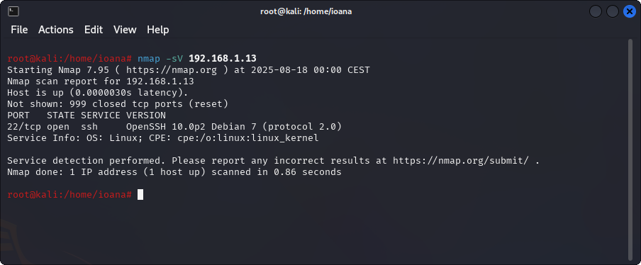
Exercise 9 – Stealth Scan
Perform a stealth scan of an IP to minimize detection risk. Use the -sS option for this type of scan.

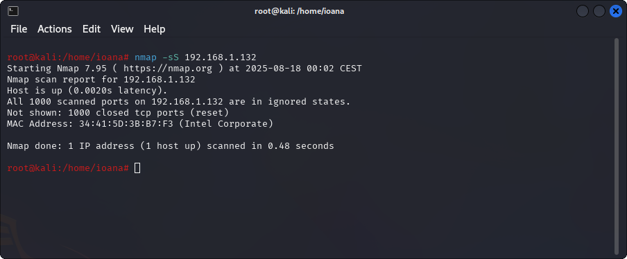
Exercise 10 – External IP Scan
Scan the IP of an external website (e.g., 8.8.8.8) to identify open ports and evaluate exposure to potential vulnerabilities.

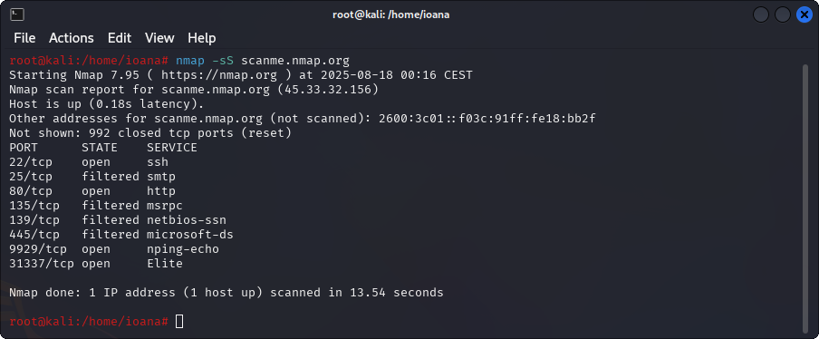

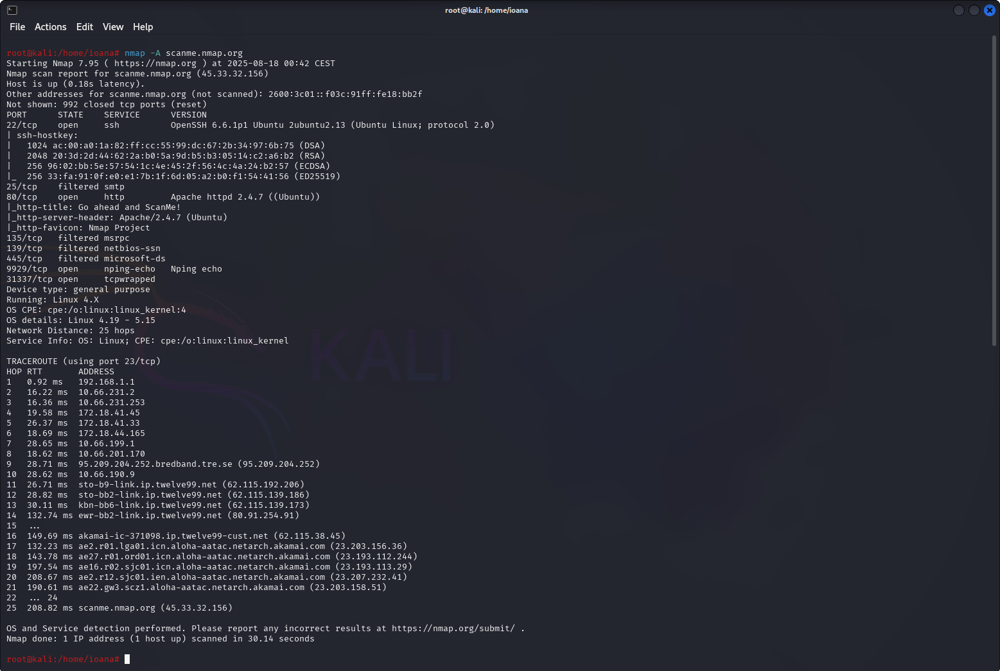
Through these exercises, I practiced nmap commands and learned how to scan, detect services, and assess networks.